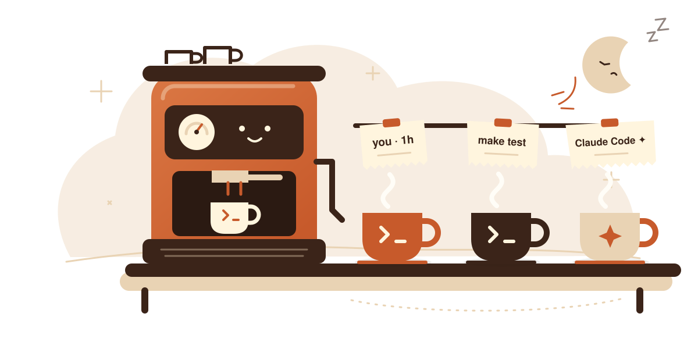
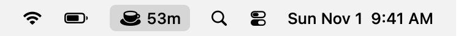
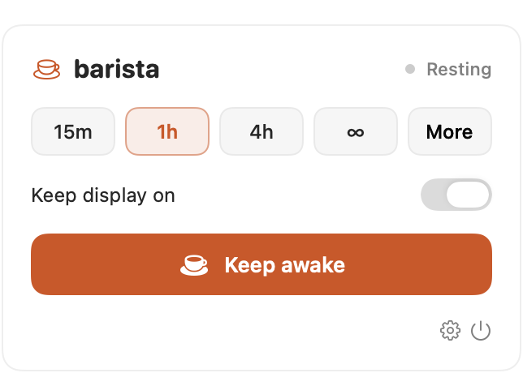
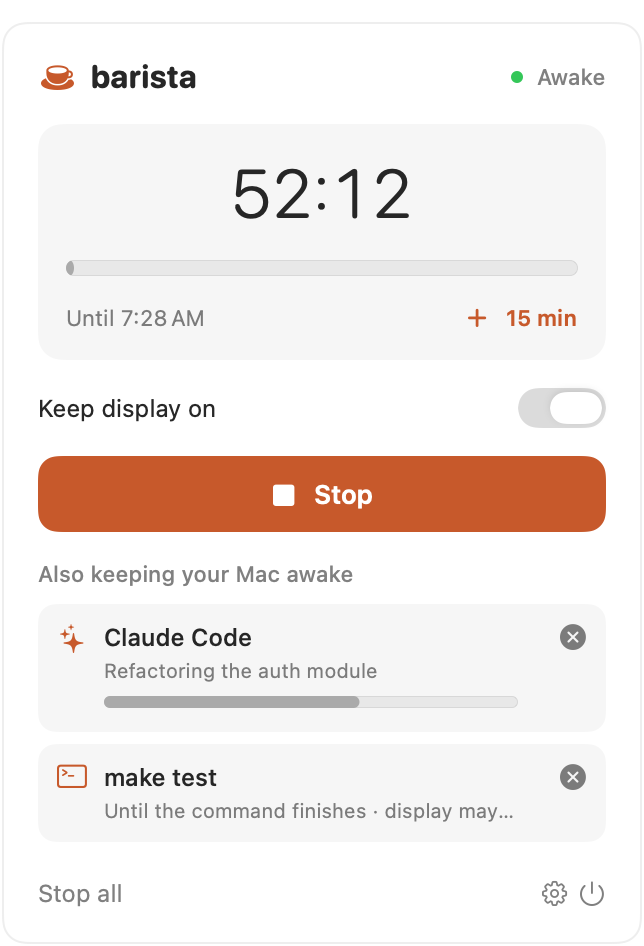
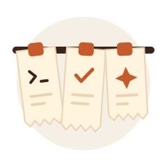
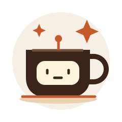
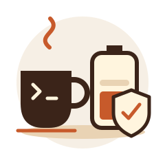

A tiny menu-bar barista that takes orders from you, your terminal, and your AI agents. It keeps the Mac awake exactly as long as each one needs, then lets it sleep.
No account. No cloud. No tracking. Just coffee.

The cup lives in your menu bar and shows the time left. Click it for the panel. Commands and agents that are keeping the Mac awake appear underneath, each with its own stop button.



make test are brewing.Most keep-awake apps have one big on/off switch. Barista keeps separate orders. Your one-hour timer, a test run, and two Claude Code sessions each keep their own ticket, and one finishing never cancels another.

Each timer, command, app, or agent gets its own session. See them all in one panel and stop any of them on its own.

Connect Claude Code in one click. Commands and MCP agents check in while they work and are released when they’re done.

On battery, Barista stops keeping the Mac awake at 20% (you can change this). Your work keeps running; it just stops keeping the Mac up.
You don’t need an agent to use Barista. On its own, it’s a simple, friendly replacement for caffeinate.
Keep the screen lit, or keep the Mac running and let the display sleep.
A countdown sits next to the cup. Turn it off if you’d rather just see the cup.
Need a little longer? Top up a running timer without starting over.
Stay awake while an export, download, or render app is open, then sleep.
⌃⌥⌘C toggles your last session from anywhere. You can pick another.
Starts quietly in the menu bar, ready when you are.
Optionally get a heads-up when a session ends and the Mac can sleep.
See your last sessions in Settings, including how each one ended.
Leaving Claude Code on a long refactor? Click Connect in Settings. A prompt opens an order, tool calls keep it going, and it closes when Claude finishes. Then your Mac can sleep.
barista run -- make test stays awake for exactly that command# connect Claude Code (or use Settings → Connect) $ barista hooks install Connected Claude Code # awake for exactly the length of a command $ barista run --name "Nightly build" -- make release $ barista status Awake · 3 session(s) · display allowed to sleep Claude Code · api-server [agent] 20:00 Nightly build [command] 00:45 My coffee break [manual] 58:12
Yes. It’s MIT-licensed and open source, with no in-app purchases, accounts, or telemetry.
No. Barista prevents idle sleep. Closing the lid, choosing Sleep, or a dead battery still put the Mac to sleep. For lid-closed work, connect power and an external display.
caffeinate or Amphetamine?Those have one switch for the whole Mac. Barista tracks who needs the Mac awake and for how long, and ends each one on its own when that job finishes or stops checking in. It also connects to Claude Code in one click.
No. Agents talk to the app over a private local socket that only your user account can reach. It opens no network port, and history stays on your Mac (the last 20 sessions).
Early builds aren’t notarized yet. Open it once, then go to System Settings → Privacy & Security and click Open Anyway. Or build it yourself with zsh scripts/build-app.sh.